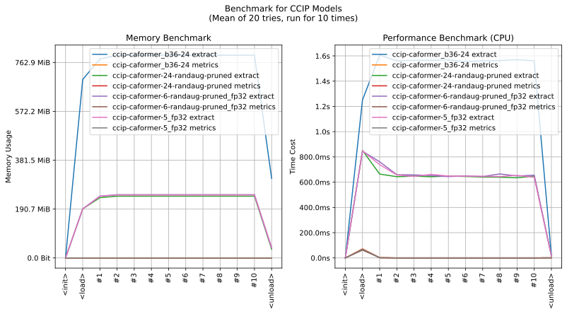
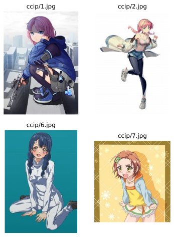

imgutils.metrics.ccip¶
- Overview:
A tool used to determine the visual differences between anime characters in two images (limited to images containing only a single anime character). When the characters in the two images are the same, they should have a smaller difference value.
The main models of CCIP are trained by 7eu7d7, and each model along with its corresponding metric data and thresholds are hosted in the repository deepghs/ccip_onnx.
This is an overall benchmark of all the operations in CCIP models:
Here are some example images
Note
Due to significant differences in thresholds and optimal clustering parameters among the CCIP models, it is recommended to refer to the relevant measurement data in the aforementioned model repository deepghs/ccip_onnx before performing any manual operations.
ccip_extract_feature¶
-
imgutils.metrics.ccip.ccip_extract_feature(image: Union[str, os.PathLike, bytes, bytearray, BinaryIO, PIL.Image.Image], size: int = 384, model: str = 'ccip-caformer-24-randaug-pruned')[source]¶ Extracts the feature vector of the character from the given anime image.
- Parameters:
image (ImageTyping) – The anime image containing a single character.
size (int) – The size of the input image to be used for feature extraction. (default:
384)model (str) – The name of the model to use for feature extraction. (default:
ccip-caformer-24-randaug-pruned) The available model names are:ccip-caformer-24-randaug-pruned,ccip-caformer-6-randaug-pruned_fp32,ccip-caformer-5_fp32,ccip-caformer_b36-24.
- Returns:
The feature vector of the character.
- Return type:
numpy.ndarray
- Examples::
>>> from imgutils.metrics import ccip_extract_feature >>> >>> feat = ccip_extract_feature('ccip/1.jpg') >>> feat.shape, feat.dtype ((768,), dtype('float32'))
ccip_batch_extract_features¶
-
imgutils.metrics.ccip.ccip_batch_extract_features(images: Union[str, os.PathLike, bytes, bytearray, BinaryIO, PIL.Image.Image, List[Union[str, os.PathLike, bytes, bytearray, BinaryIO, PIL.Image.Image]], Tuple[Union[str, os.PathLike, bytes, bytearray, BinaryIO, PIL.Image.Image], …]], size: int = 384, model: str = 'ccip-caformer-24-randaug-pruned')[source]¶ Extracts the feature vectors of multiple images using the specified model.
- Parameters:
images (MultiImagesTyping) – The input images from which to extract the feature vectors.
size (int) – The size of the input image to be used for feature extraction. (default:
384)model (str) – The name of the model to use for feature extraction. (default:
ccip-caformer-24-randaug-pruned) The available model names are:ccip-caformer-24-randaug-pruned,ccip-caformer-6-randaug-pruned_fp32,ccip-caformer-5_fp32,ccip-caformer_b36-24.
- Returns:
The feature vectors of the input images.
- Return type:
numpy.ndarray
- Examples::
>>> from imgutils.metrics import ccip_batch_extract_features >>> >>> feat = ccip_batch_extract_features(['ccip/1.jpg', 'ccip/2.jpg', 'ccip/6.jpg']) >>> feat.shape, feat.dtype ((3, 768), dtype('float32'))
ccip_default_threshold¶
-
imgutils.metrics.ccip.ccip_default_threshold(model: str = 'ccip-caformer-24-randaug-pruned') → float[source]¶ Retrieves the default threshold value obtained from model metrics in the Hugging Face model repository.
- Parameters:
model (str) – The name of the model to use for feature extraction. (default:
ccip-caformer-24-randaug-pruned) The available model names are:ccip-caformer-24-randaug-pruned,ccip-caformer-6-randaug-pruned_fp32,ccip-caformer-5_fp32,ccip-caformer_b36-24.- Returns:
The default threshold value obtained from model metrics.
- Return type:
float
- Examples::
>>> from imgutils.metrics import ccip_default_threshold >>> >>> ccip_default_threshold() 0.17847511429108218 >>> ccip_default_threshold('ccip-caformer-6-randaug-pruned_fp32') 0.1951224011983088 >>> ccip_default_threshold('ccip-caformer-5_fp32') 0.18397327797685215
ccip_difference¶
-
imgutils.metrics.ccip.ccip_difference(x: Union[str, os.PathLike, bytes, bytearray, BinaryIO, PIL.Image.Image, numpy.ndarray], y: Union[str, os.PathLike, bytes, bytearray, BinaryIO, PIL.Image.Image, numpy.ndarray], size: int = 384, model: str = 'ccip-caformer-24-randaug-pruned') → float[source]¶ Calculates the difference value between two anime characters based on their images or feature vectors.
- Parameters:
x (Union[ImageTyping, np.ndarray]) – The image or feature vector of the first anime character.
y (Union[ImageTyping, np.ndarray]) – The image or feature vector of the second anime character.
size (int) – The size of the input image to be used for feature extraction. (default:
384)model (str) – The name of the model to use for feature extraction. (default:
ccip-caformer-24-randaug-pruned) The available model names are:ccip-caformer-24-randaug-pruned,ccip-caformer-6-randaug-pruned_fp32,ccip-caformer-5_fp32,ccip-caformer_b36-24.
- Returns:
The difference value between the two anime characters.
- Return type:
float
- Examples::
>>> from imgutils.metrics import ccip_difference >>> >>> ccip_difference('ccip/1.jpg', 'ccip/2.jpg') # same character 0.16583099961280823 >>> >>> # different characters >>> ccip_difference('ccip/1.jpg', 'ccip/6.jpg') 0.42947039008140564 >>> ccip_difference('ccip/1.jpg', 'ccip/7.jpg') 0.4037521779537201 >>> ccip_difference('ccip/2.jpg', 'ccip/6.jpg') 0.4371533691883087 >>> ccip_difference('ccip/2.jpg', 'ccip/7.jpg') 0.40748104453086853 >>> ccip_difference('ccip/6.jpg', 'ccip/7.jpg') 0.392294704914093
ccip_same¶
-
imgutils.metrics.ccip.ccip_same(x: Union[str, os.PathLike, bytes, bytearray, BinaryIO, PIL.Image.Image, numpy.ndarray], y: Union[str, os.PathLike, bytes, bytearray, BinaryIO, PIL.Image.Image, numpy.ndarray], threshold: Optional[float] = None, size: int = 384, model: str = 'ccip-caformer-24-randaug-pruned') → float[source]¶ Determines whether two given images or feature vectors belong to the same anime character based on the CCIP model.
- Parameters:
x (Union[ImageTyping, np.ndarray]) – The image or feature vector of the first anime character.
y (Union[ImageTyping, np.ndarray]) – The image or feature vector of the second anime character.
threshold (Optional[float]) – The threshold value for determining similarity. If not provided, the default threshold for the model from
ccip_default_threshold()is used.size (int) – The size of the input image to be used for feature extraction. (default:
384)model (str) – The name of the model to use for feature extraction. (default:
ccip-caformer-24-randaug-pruned) The available model names are:ccip-caformer-24-randaug-pruned,ccip-caformer-6-randaug-pruned_fp32,ccip-caformer-5_fp32,ccip-caformer_b36-24.
- Returns:
True if the images or feature vectors are determined to belong to the same anime character, False otherwise.
- Return type:
bool
- Examples::
>>> from imgutils.metrics import ccip_same >>> >>> ccip_same('ccip/1.jpg', 'ccip/2.jpg') # same character True >>> >>> # different characters >>> ccip_same('ccip/1.jpg', 'ccip/6.jpg') False >>> ccip_same('ccip/1.jpg', 'ccip/7.jpg') False >>> ccip_same('ccip/2.jpg', 'ccip/6.jpg') False >>> ccip_same('ccip/2.jpg', 'ccip/7.jpg') False >>> ccip_same('ccip/6.jpg', 'ccip/7.jpg') False
ccip_batch_differences¶
-
imgutils.metrics.ccip.ccip_batch_differences(images: List[Union[str, os.PathLike, bytes, bytearray, BinaryIO, PIL.Image.Image, numpy.ndarray]], size: int = 384, model: str = 'ccip-caformer-24-randaug-pruned') → numpy.ndarray[source]¶ Calculates the pairwise differences between a given list of images or feature vectors representing anime characters.
- Parameters:
images (List[Union[ImageTyping, np.ndarray]]) – The list of images or feature vectors representing anime characters.
size (int) – The size of the input image to be used for feature extraction. (default:
384)model (str) – The name of the model to use for feature extraction. (default:
ccip-caformer-24-randaug-pruned) The available model names are:ccip-caformer-24-randaug-pruned,ccip-caformer-6-randaug-pruned_fp32,ccip-caformer-5_fp32,ccip-caformer_b36-24.
- Returns:
The matrix of pairwise differences between the given images or feature vectors.
- Return type:
np.ndarray
- Examples::
>>> from imgutils.metrics import ccip_batch_differences >>> >>> ccip_batch_differences(['ccip/1.jpg', 'ccip/2.jpg', 'ccip/6.jpg', 'ccip/7.jpg']) array([[6.5350548e-08, 1.6583106e-01, 4.2947042e-01, 4.0375218e-01], [1.6583106e-01, 9.8025822e-08, 4.3715334e-01, 4.0748104e-01], [4.2947042e-01, 4.3715334e-01, 3.2675274e-08, 3.9229470e-01], [4.0375218e-01, 4.0748104e-01, 3.9229470e-01, 6.5350548e-08]], dtype=float32)
ccip_batch_same¶
-
imgutils.metrics.ccip.ccip_batch_same(images: List[Union[str, os.PathLike, bytes, bytearray, BinaryIO, PIL.Image.Image, numpy.ndarray]], threshold: Optional[float] = None, size: int = 384, model: str = 'ccip-caformer-24-randaug-pruned') → numpy.ndarray[source]¶ Calculates whether the given list of images or feature vectors representing anime characters are the same characters, based on the pairwise differences matrix and a given threshold.
- Parameters:
images (List[Union[ImageTyping, np.ndarray]]) – The list of images or feature vectors representing anime characters.
threshold (Optional[float]) – The threshold value for determining similarity. If not provided, the default threshold for the model from
ccip_default_threshold()is used.size (int) – The size of the input image to be used for feature extraction. (default:
384)model (str) – The name of the model to use for feature extraction. (default:
ccip-caformer-24-randaug-pruned) The available model names are:ccip-caformer-24-randaug-pruned,ccip-caformer-6-randaug-pruned_fp32,ccip-caformer-5_fp32,ccip-caformer_b36-24.
- Returns:
A boolean matrix of shape (N, N), where N is the length of the images list. The value at position (i, j) indicates whether the i-th and j-th characters are considered the same.
- Return type:
np.ndarray
- Examples::
>>> from imgutils.metrics import ccip_batch_same >>> >>> ccip_batch_same(['ccip/1.jpg', 'ccip/2.jpg', 'ccip/6.jpg', 'ccip/7.jpg']) array([[ True, True, False, False], [ True, True, False, False], [False, False, True, False], [False, False, False, True]])
ccip_default_clustering_params¶
-
imgutils.metrics.ccip.ccip_default_clustering_params(model: str = 'ccip-caformer-24-randaug-pruned', method: Literal[dbscan, dbscan_2, dbscan_free, optics, optics_best] = 'optics') → Tuple[float, int][source]¶ Retrieves the default configuration for clustering operations.
When the
methodisdbscan, the epsilon (eps) value is obtained fromccip_default_threshold()as the default threshold value, and the min_samples value is set to2.When the
methodisoptics, the epsilon (eps) value is set to0.5, and the min_samples value is set to5.For other values of
method, the function automatically retrieves the recommended parameter configuration from the optimized models in the HuggingFace model repository.- Parameters:
model (str) – The name of the model to use for feature extraction. (default:
ccip-caformer-24-randaug-pruned) The available model names are:ccip-caformer-24-randaug-pruned,ccip-caformer-6-randaug-pruned_fp32,ccip-caformer-5_fp32,ccip-caformer_b36-24.method (CCIPClusterMethodTyping) – The clustering method for which the default parameters are retrieved. (default:
optics) The available options are:dbscan,dbscan_2,dbscan_free,optics,optics_best.
- Returns:
A tuple containing the default clustering parameters: (eps, min_samples).
- Return type:
Tuple[float, int]
- Examples::
>>> from imgutils.metrics import ccip_default_clustering_params >>> >>> ccip_default_clustering_params() (0.5, 5) >>> ccip_default_clustering_params(method='dbscan') (0.17847511429108218, 2) >>> ccip_default_clustering_params(method='dbscan_2') (0.12921094122454668, 2) >>> ccip_default_clustering_params(method='dbscan_free') (0.1291187648928262, 2) >>> ccip_default_clustering_params(method='optics_best') (0.1836453739562513, 5)
ccip_clustering¶
-
imgutils.metrics.ccip.ccip_clustering(images: List[Union[str, os.PathLike, bytes, bytearray, BinaryIO, PIL.Image.Image, numpy.ndarray]], method: Literal[dbscan, dbscan_2, dbscan_free, optics, optics_best] = 'optics', eps: Optional[float] = None, min_samples: Optional[int] = None, size: int = 384, model: str = 'ccip-caformer-24-randaug-pruned') → numpy.ndarray[source]¶ Performs clustering on the given list of images or feature vectors.
The function applies the selected clustering method (
method) with the specified parameters (epsandmin_samples) to cluster the provided list of images or feature vectors (images).The default values for
epsandmin_samplesare obtained fromccip_default_clustering_params()based on the selectedmethodandmodel. If no values are provided forepsandmin_samples, the default values will be used.The images or feature vectors are preprocessed and converted to feature representations using the specified
sizeandmodelparameters. The pairwise differences between the feature vectors are calculated usingccip_batch_differences()to define the distance metric for clustering.The clustering is performed using either the DBSCAN algorithm or the OPTICS algorithm based on the selected
method. The clustering labels are returned as a NumPy array.- Parameters:
images (List[_FeatureOrImage]) – A list of images or feature vectors to be clustered.
method (CCIPClusterMethodTyping) – The clustering method for which the default parameters are retrieved. (default:
optics) The available options are:dbscan,dbscan_2,dbscan_free,optics,optics_best.eps (Optional[float]) – The maximum distance between two samples to be considered in the same neighborhood. (default:
None) If None, the default value is obtained fromccip_default_clustering_params().min_samples (Optional[int]) – The number of samples in a neighborhood for a point to be considered as a core point. (default:
None) If None, the default value is obtained fromccip_default_clustering_params().size (int) – The size of the images to be used for feature extraction. (default:
384)model (str) – The name of the model to use for feature extraction. (default:
ccip-caformer-24-randaug-pruned) The available model names are:ccip-caformer-24-randaug-pruned,ccip-caformer-6-randaug-pruned_fp32,ccip-caformer-5_fp32,ccip-caformer_b36-24.
- Returns:
An array of clustering labels indicating the cluster assignments for each image or feature vector.
- Return type:
np.ndarray
- Examples::
Here are all the images

>>> from imgutils.metrics import ccip_clustering >>> >>> images = [f'ccip/{i}.jpg' for i in range(1, 13)] >>> images ['ccip/1.jpg', 'ccip/2.jpg', 'ccip/3.jpg', 'ccip/4.jpg', 'ccip/5.jpg', 'ccip/6.jpg', 'ccip/7.jpg', 'ccip/8.jpg', 'ccip/9.jpg', 'ccip/10.jpg', 'ccip/11.jpg', 'ccip/12.jpg'] >>> >>> # few images, min_sample should not be too large >>> ccip_clustering(images, min_samples=2) [0, 0, 0, 3, 3, 3, 1, 1, 1, 1, 2, 2]
Note
Please note that the clustering process in CCIP is sensitive to parameters and may require tuning. Therefore, it is recommended to follow these guidelines:
1. When dealing with a large number of samples, it is recommended to use the default parameters of the
opticsmethod for clustering. This helps ensure the robustness of the clustering solution.2. If the number of samples is small, it is advised to reduce the value of the
min_samplesparameter before performing clustering. However, it should be noted that this may significantly increase the possibility of separating slightly different instances of the same character into different clusters.3. In cases where the samples exhibit a regular pattern overall (e.g., characters with clear features and consistent poses and outfits), the
dbscanmethod can be considered for clustering. However, please be aware that the dbscan method is highly sensitive to theepsvalue, so careful tuning is necessary.
-